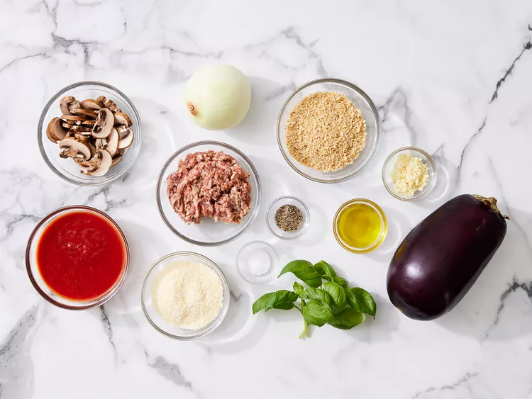
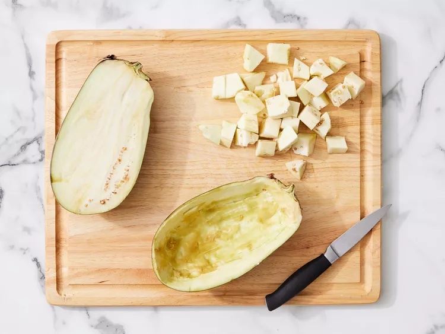
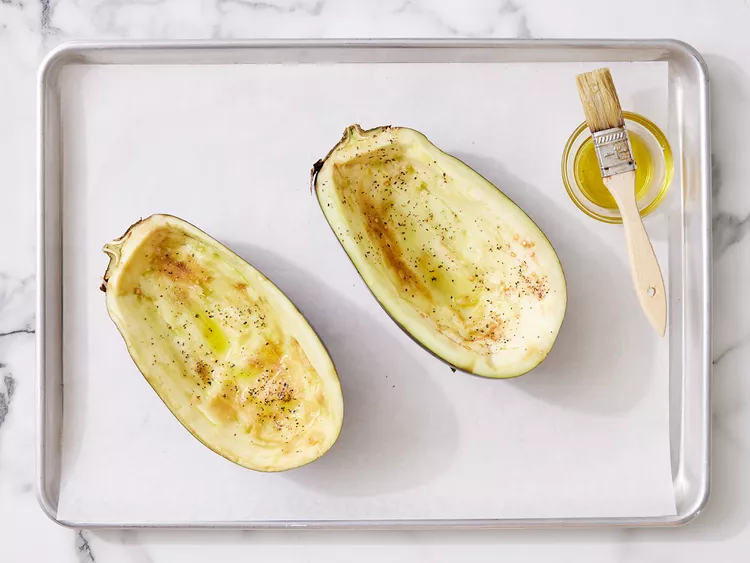
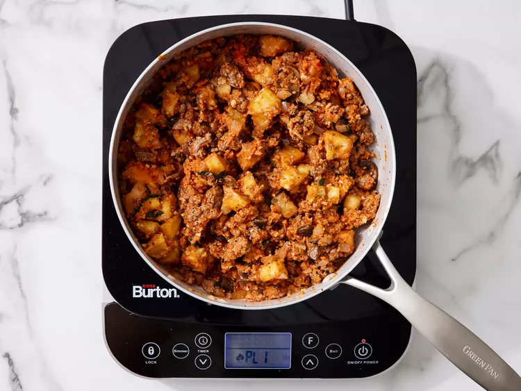
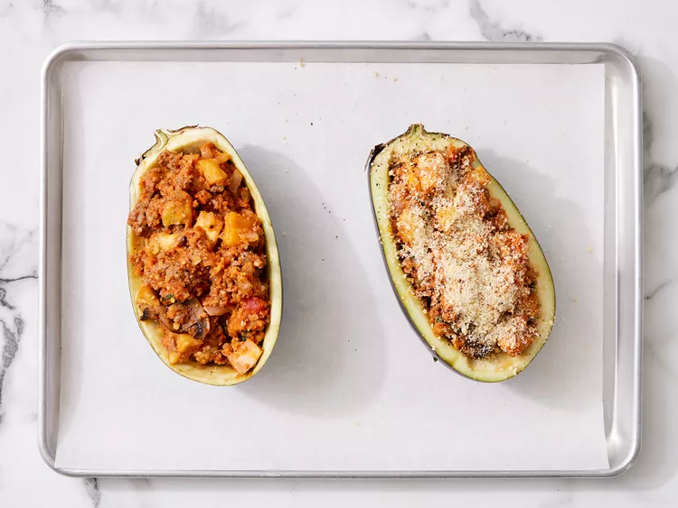
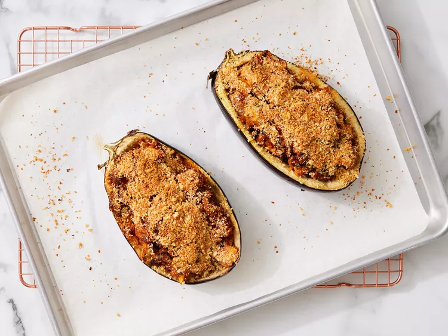

Stuffed Eggplant
This delicious stuffed eggplant with a cheesy top is a must-try recipe! Great as a hearty main but you can buy the mini eggplants and use them for a side dish or appetizer.

Ingredients
- Eggplant: You’ll need one eggplant (halved lengthwise) to make two servings.
- Olive oil: Brush the shells with olive oil before seasoning with salt and pepper.
- Seasonings: This stuffed eggplant is seasoned with salt, pepper, fresh garlic, and fresh basil.
- Sausage: Sweet Italian sausage makes this stuffed eggplant a hearty, crowd-pleasing meal.
- Vegetables: An onion and fresh mushrooms lend texture and flavor.
- Pasta sauce: Use store-bought or homemade tomato-basil pasta sauce.
- Bread crumbs: Italian-seasoned panko bread crumbs give the stuffed eggplant a welcome crunch.
- Cheese: For the most delicious results, grate your own Parmesan cheese instead of using the pre-shredded stuff.
How to Make Stuffed Eggplant
You’ll find the full, step-by-step recipe below – but here’s a brief overview of what you can expect when you make stuffed eggplant:
- Scoop out the flesh, brush the shells with oil, and season.
- Chop the reserved eggplant flesh into bite-sized pieces.
- Cook sausage, vegetables, and garlic in the remaining oil.
- Stir in the reserved eggplant, basil, and sauce. Mix in some of the panko and cheese.
- Stuff the shells and sprinkle the remaining cheese and panko over the top.
- Bake until the eggplant is tender.
How to Store Stuffed Eggplant
This stuffed eggplant recipe is best served right away. However, if you have leftovers, you can store them in an airtight container in the refrigerator for up to three days.
Ingredients
- 1 (1½ pound) eggplant, halved lengthwise
- 3 tablespoons olive oil, divided
- 1/2 teaspoon salt
- 1/2 teaspoon ground black pepper
- 1/2 pound sweet Italian sausage, casings removed
- 1 cup chopped onion
- 1 cup sliced fresh mushrooms
- 4 cloves garlic, minced
- 2 tablespoons chopped fresh basil
- 1 cup tomato-basil pasta sauce
- 3/4 cup Italian seasoned panko bread crumbs, divided
- 1/2 cup grated Parmesan cheese, divided
Directions
Step 1
Gather ingredients. Preheat the oven to 350 degrees F (175 degrees C). Line a rimmed baking sheet with foil.

Step 2
Cut around the edge of the flesh in each eggplant half using a sharp paring knife, leaving a 1/2-inch border. Scoop out flesh using a spoon, leaving 1/2-inch-thick shell; reserve flesh and chop into bite-size pieces.

Step 3
Brush shells with 2 tablespoons olive oil and season with salt and pepper; set aside.

Step 4
Heat remaining 1 tablespoon olive oil in a large, deep skillet over medium high heat. Add sausage, onion, mushrooms, and garlic; cook and stir until sausage is evenly brown. Stir in reserved chopped eggplant and basil. Add pasta sauce; cook and stir for 5 minutes. Mix in 1/2 cup of panko and 1/4 cup Parmesan cheese.

Step 5
Stuff mixture into eggplant shells. Combine remaining panko and cheese in a small bowl; sprinkle over stuffing.

Step 6
Bake in the preheated oven until eggplant is tender, 45 to 50 minutes.

Nutrition Facts
- 387 Calories
- 21g Fat
- 37g Carbs
- 18g Protein